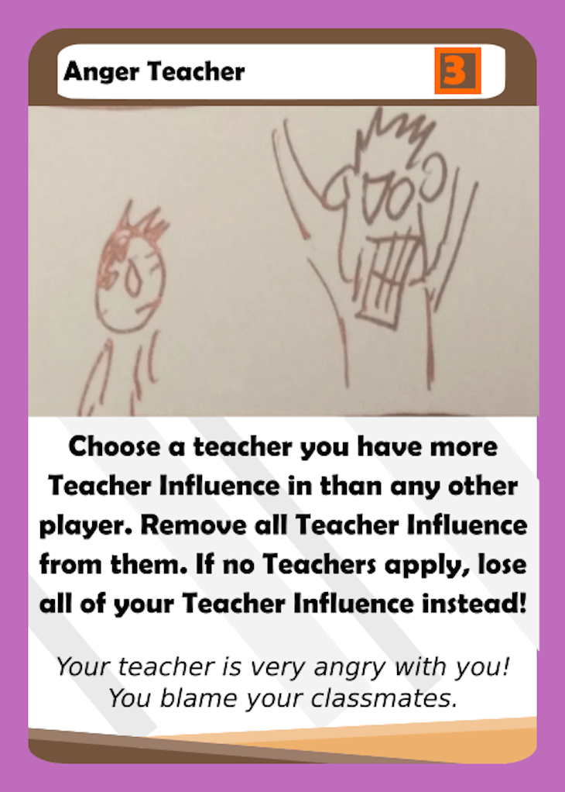
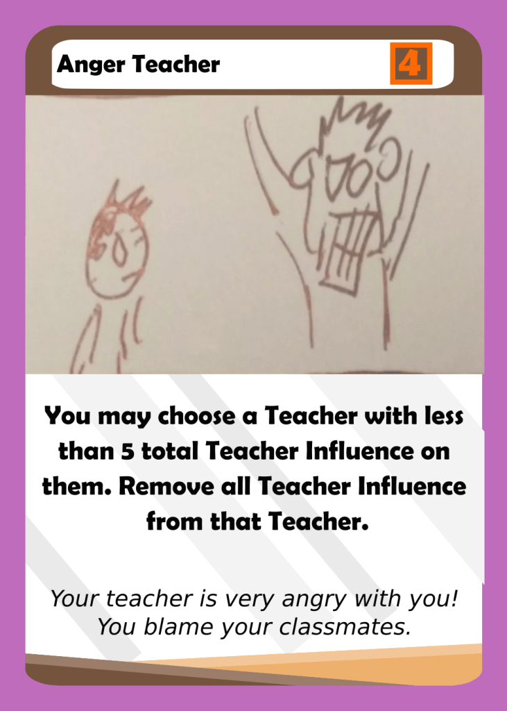
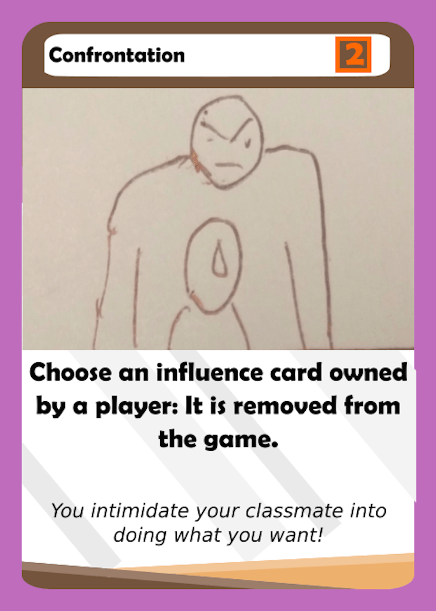
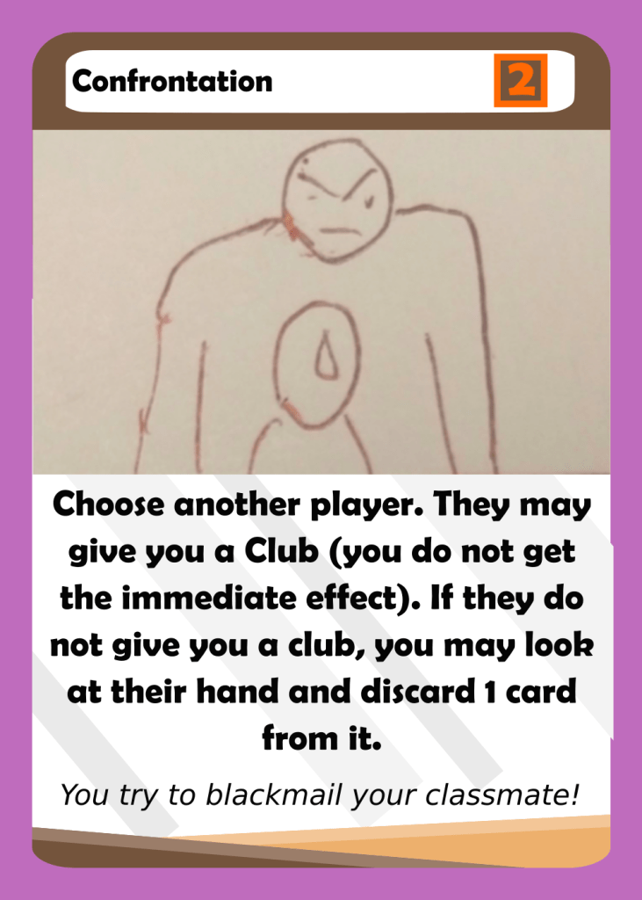
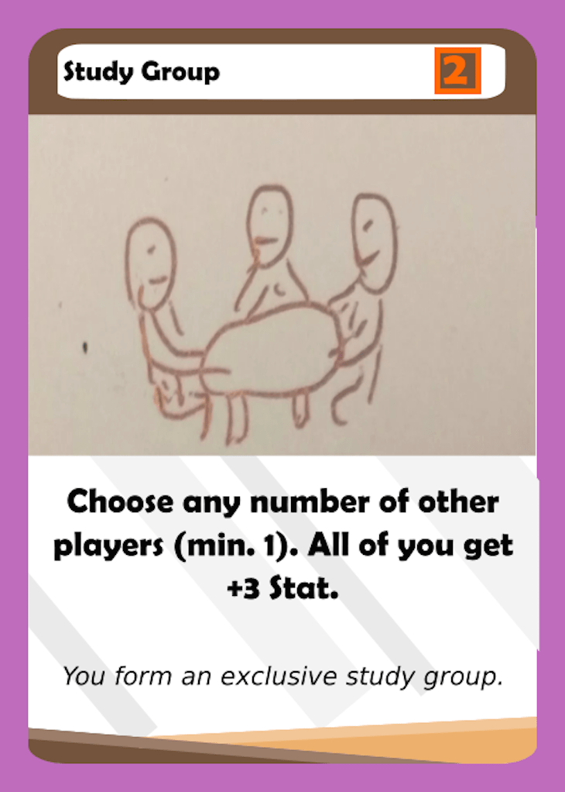
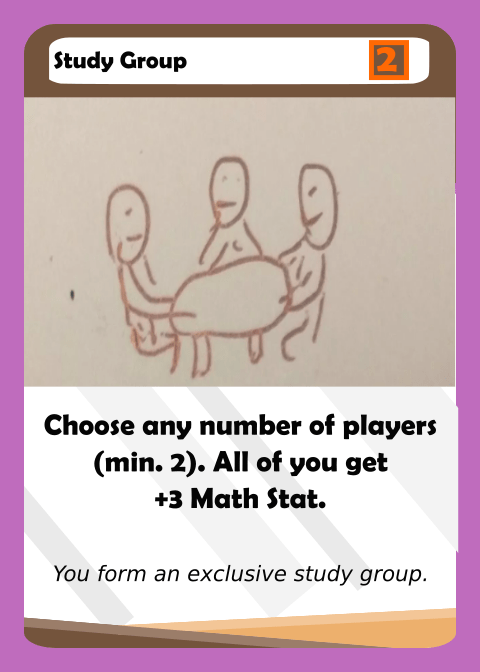
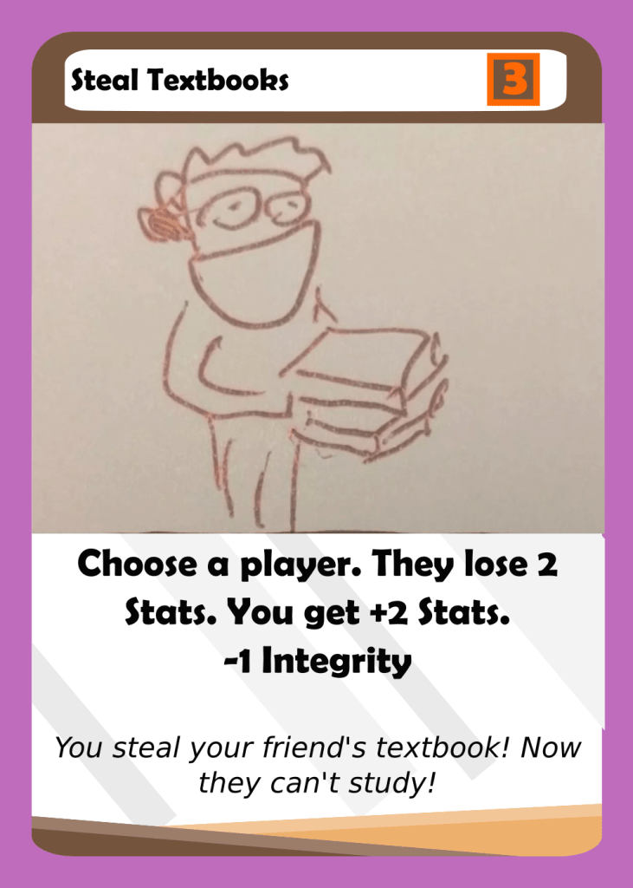
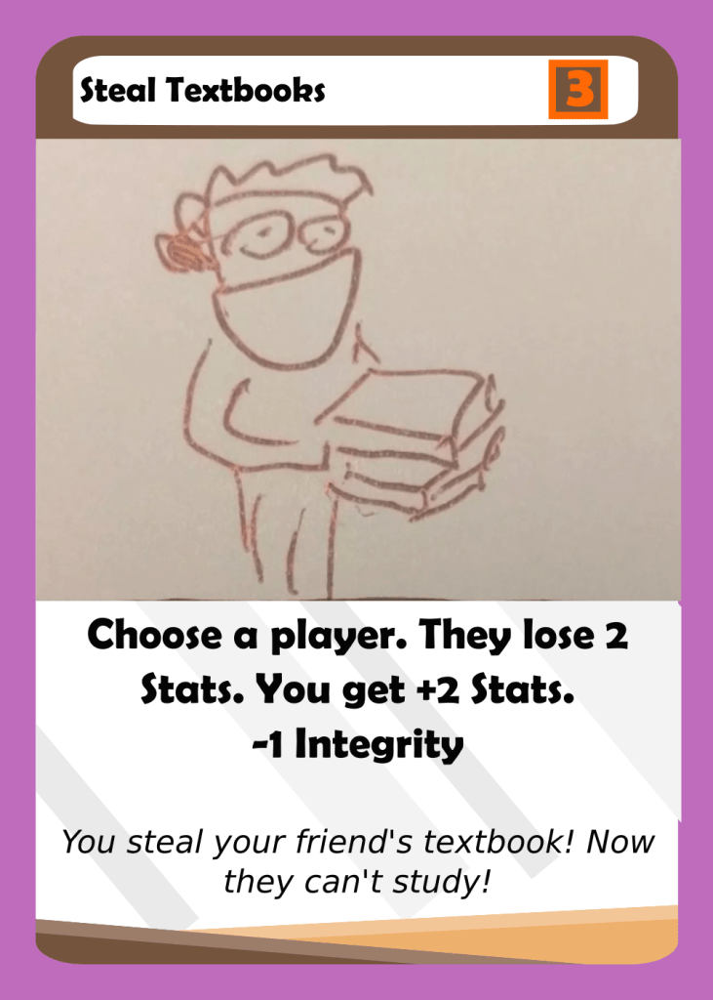

Adjusting Cards (part four)
July 29, 2018
Hey everyone! This time we will be looking at the Junior deck. There were a lot of changes that I made as I found a few persistent issues with the old deck. Because of this, I only explained a few of the changes that I made, and listed the rest of them below. The primary issue I wanted to fix was the fact that the Junior deck simply did not have enough action points to sustain similar levels of correcting classes as previous years. This is bad because players want to feel like they are making progress and getting better, rather than getting worse, over time. The other large issue was players complaining about a lack of choice: one person said that they didn’t want to focus on the FUN at all because it was not guaranteed return, and had a high cost. In addition, cards like FUN Taker for Hire and Adderrall on the FUN are useless when you already have a FUN score. Thus, these cards and others were changed to make it easier to play event cards.
Anger Teacher
 The intention behind designing this card was to remove excess Teacher Influence from the game, which can often times be laying around. However, this card instead became very difficult to play as it often times had to be set up in advance and always hurt. The card has now been changed to be optional, and also to remove no more than 4 Teacher Influence. This way, it isn’t very strong, but is still a solid card at 4 Action Points and a decent effect.
Confrontation
 I was mixed about this, but ultimately the effect needed to be changed as the vast majority of Influence Cards are now one-time uses. This makes Confrontation very confusing and very rarely applicable. The way the card works now is interesting but may be too complicated. If most people end up giving clubs away, I think the effect could just change to “another player gives you one of their clubs”.
Study Group
 This card is a good example of a change that makes a card easier to understand. The first version creates questions such as, does the player who plays the card get the Stat bonus? In addition, I like the fact that Math Stat is the “cheap” stat that you can easily pile, and have to find a creative way to spend (usually through the FUN, or fueling Yasse).
Steal Textbooks
 

This is another example of how clarity can help make cards easier to understand. Even though there is less text on the previous version of this card, it creates several questions such as what happens if the other player doesn’t have 2 Stats? In addition, do you have to gain the same Stats that the other player loses? This way, the card makes more sense and can be played even when other people have no Stats.
Other changes:
- Blame the Student (3 to 5 action points)
- Thinking about Recs (2 to 3 action points, clarifies 5 Teacher Influence in ONE teacher)
- Burn Old Textbooks (3 to 4 action points)
- FUN taker for hire (-3 Integrity to -2 Integrity)
- Adderall on the FUN (1 to 2 action points and -3 Integrity to -2 Integrity)
- Friends are Unnecessary (3 to 5 action points)
- Teacher Gossip (from 10 Integrity to less than 7 Integrity. 3 to 4 Action points
- Shared Misery (3 to 4 action points)
- Share testing strategies (2 to 3 action points)
With all these changes combined, the average action points per card in Junior year is 3. This is a considerable increase from Sophomore year, and actually puts the Junior deck at a higher value than the Senior deck. This makes some thematic sense as well as practical sense as there is no longer a need to spend English Stat to draw Essay cards.
Let me know what you think by leaving a comment, and make sure to subscribe through using the subscribe widget!